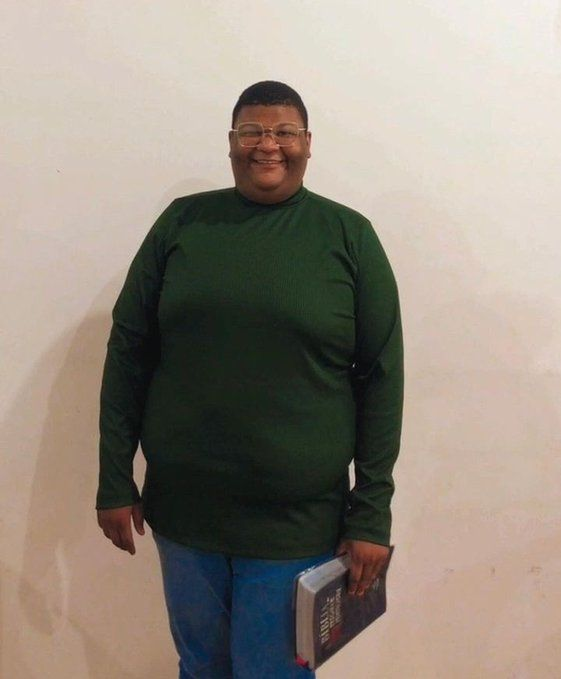

Brasil vence de 5x4 da França ganha o hexa
Por: Bianca Bragança
Nos últimos 5 minutos do segundo tempo, Endrick passa para Cami, ela finaliza marcando um gol de cabeceio que desempata o jogo e comemora fazendo um vlog de 24h. To gag
Vamos compartilhar notícias diárias sobre assuntos do momento
Por: Bianca Bragança
Nos últimos 5 minutos do segundo tempo, Endrick passa para Cami, ela finaliza marcando um gol de cabeceio que desempata o jogo e comemora fazendo um vlog de 24h. To gag

Por: Alana Victória
Após competir com Agatha Nunes, migo faz uma publi pro supermercado, e vence as eleições!!!! Tai goxtei
Por: Alana Victória
VANTAGENS:
DESVANTAGENS: